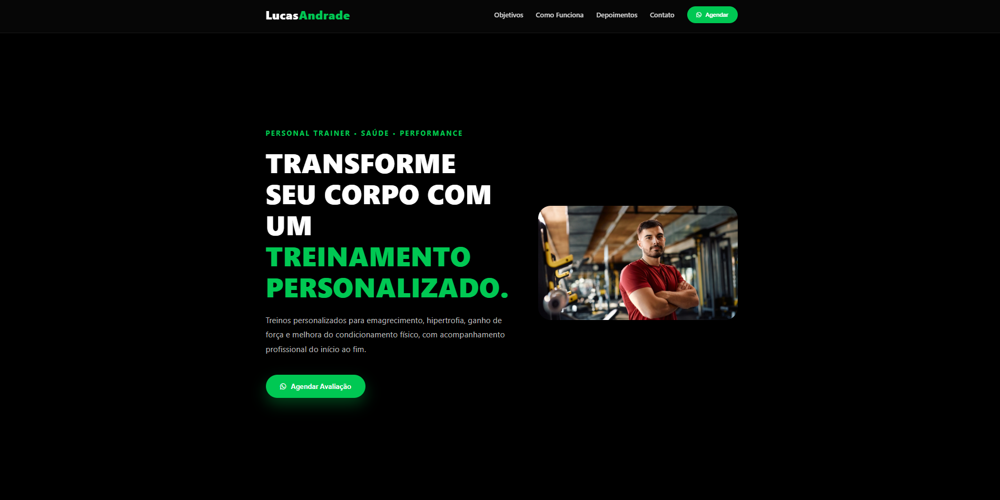
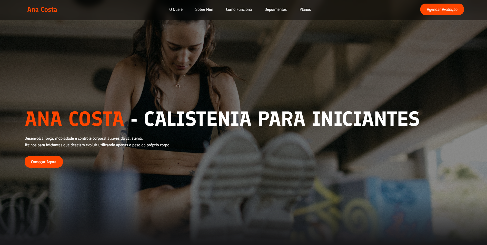
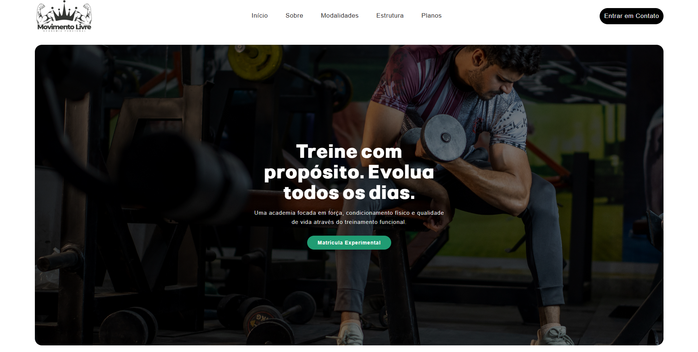
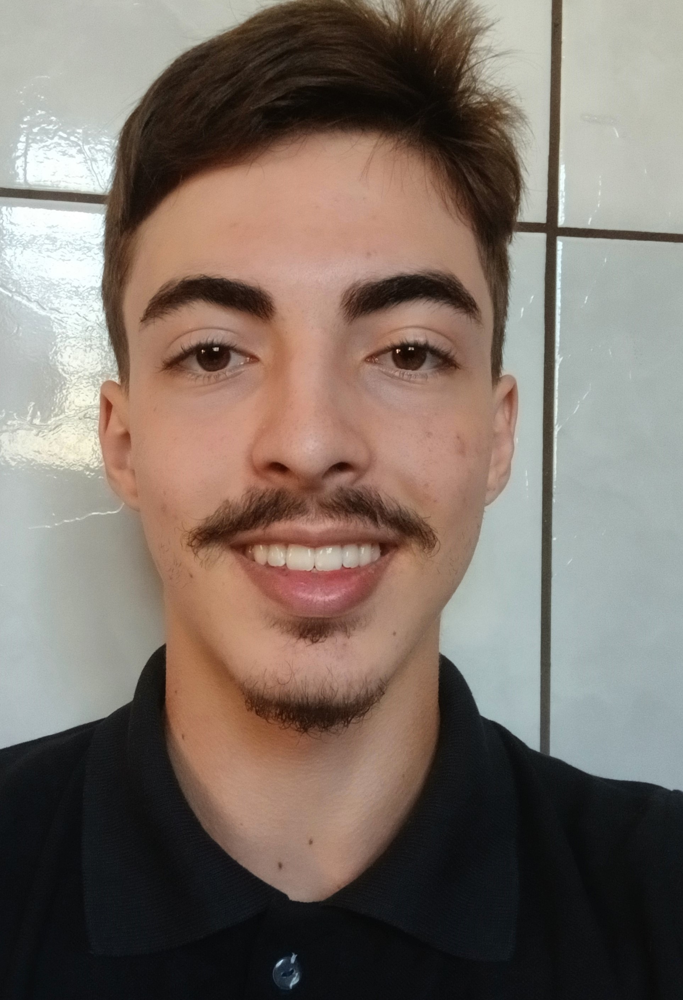

Sites que transformam visitantes em alunos.
Desenvolvo sites profissionais para personal trainers, academias e instrutores de calistenia que desejam aumentar sua presença digital e conquistar mais clientes.

Serviços
Landing Pages
Páginas criadas para transformar visitantes em novos alunos.
Sites Institucionais
Apresente seus serviços com profissionalismo e fortaleça sua presença online.
Manutenção
Atualizações, melhorias e suporte contínuo para seu site.
Projetos
Alguns projetos abaixo são conceituais e foram desenvolvidos para demonstrar minhas habilidades em design e desenvolvimento.
Lucas Andrade
Landing Page desenvolvida para aumentar a captação de alunos através de anúncios e WhatsApp.


Ana Costa
Landing Page desenvolvida para aumentar a captação de alunos através de anúncios e WhatsApp.
Movimento Livre
Landing Page desenvolvida para aumentar a captação de alunos através de anúncios e WhatsApp.

Como Trabalho
Conversa Inicial
Entendo seus objetivos, seu público e o que você espera alcançar com o site.
Planejamento
Defino a estrutura, organização e estratégia para oferecer a melhor experiência ao visitante.
Desenvolvimento
Crio um site moderno, rápido, responsivo e otimizado para gerar resultados.
Publicação
Após sua aprovação, publico o site e deixo tudo pronto para receber novos clientes.
Diferenciais
Tudo o que você precisa para ter um site profissional e pronto para gerar resultados.
Design moderno
Totalmente responsivo
Carregamento rápido
Integração com WhatsApp
SEO básico
Fácil atualização

Sobre
Sou desenvolvedor web especializado na criação de sites para personal trainers, academias e profissionais da área fitness. Meu objetivo é desenvolver páginas rápidas, modernas e focadas em conversão, ajudando você a transmitir mais profissionalismo, fortalecer sua presença digital e conquistar novos alunos.
Perguntas Frequentes
Quanto tempo leva para desenvolver um site?
O prazo varia conforme a complexidade do projeto, mas a maioria dos sites é entregue entre 7 e 15 dias úteis.
O site funciona em celulares?
Sim. Todos os sites são desenvolvidos com design responsivo, garantindo uma boa experiência em celulares, tablets e computadores.
Você faz alterações após a entrega?
Sim. Também ofereço suporte e manutenção para ajustes, atualizações e melhorias no site.
Preciso ter domínio e hospedagem?
Caso ainda não tenha, posso orientar você na escolha e realizar toda a configuração necessária.
Como funciona o pagamento?
O pagamento é combinado durante o orçamento. Dependendo do projeto, é possível dividir em etapas.
Seu próximo aluno pode estar procurando seus serviços agora.
Tenha um site profissional que fortaleça sua marca, facilite o contato e ajude você a conquistar mais clientes.